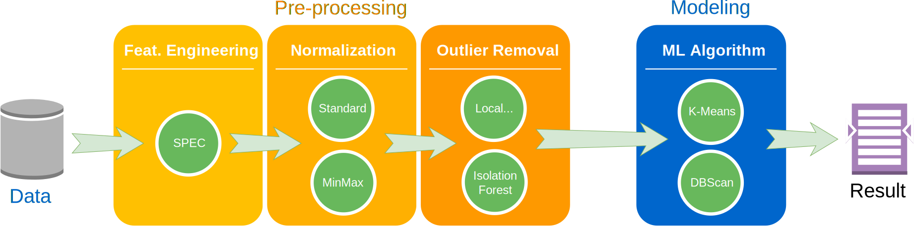
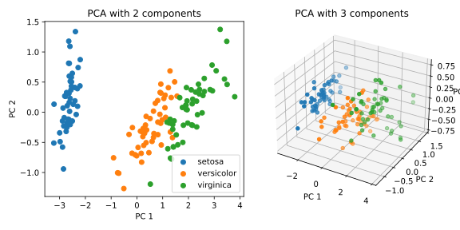

Machine Learning and Data Mining (Module 2)
Data Preparation
Matteo Francia
DISI — University of Bologna
m.francia@unibo.it
Data Preparation (aka data pre-processing)
The data preparation phase covers all activities to construct the dataset fed into the modeling tools from the initial data.
Data pipeline
It plays a key role in a data analytics process and avoids “garbage in, garbage out”
- A broad range of activities; from correcting errors to selecting the most relevant features
- Out-of-range values (e.g., Income: −100)
- Impossible data combinations (e.g.,
Exam mark: 15, Exam result: Passed)
- Missing values
- Inconsistent data among multiple sources
- There are no pre-defined rules on the impact of pre-processing transformations
- Data scientists cannot easily foresee the impact of pipeline prototypes
Data pre-processing includes (Shearer 2000) data
- selection
- cleansing
- construction
- integration
- formatting
Select Data
Deciding on the data that will be used for the analysis is based on several criteria, including
- its relevance to the data mining goals
- quality and technical constraints such as GDPR or limits on data volume or data types
Part of the data selection process should involve explaining why certain data was included or excluded.
- It is also a good idea to decide if one or more attributes are more important than others
For instance, while an individual’s address may be used to determine which region that individual is from, the actual street address data can likely be eliminated to reduce the amount of data that must be evaluated.
To learn how sales are characterized by store type you do not need to consider the StoreId
| S1 |
grocery |
1000 |
| S2 |
supermarket |
1500 |
| S3 |
… |
… |
The following personal data is considered ‘sensitive’ and is subject to specific processing conditions:
- personal data revealing racial or ethnic origin, political opinions, religious or philosophical beliefs;
- trade-union membership;
- genetic data, biometric data processed solely to identify a human being;
- health-related data;
- data concerning a person’s sex life or sexual orientation.
See article 4
Clean Data (or data cleansing)
Without clean data, the results of a data mining analysis are in question.
The data analyst must
- select clean subsets of data or incorporate techniques such as estimating missing data through modeling analyses
- make sure they outline how they addressed each quality problem reported in the earlier “Verify Data Quality” step
Imputation of missing values
Imputation is the process of replacing missing data with substituted values.
Listwise deletion (complete case) deletes data with missing values
- If data are missing at random, listwise deletion does not add any bias, but it decreases the sample size
- Otherwise, listwise deletion will introduce bias because the remaining data are not representative of the original sample
Before cleaning
| S1 |
|
1000 |
| S2 |
supermarket |
|
| S3 |
grocery |
100 |
Pairwise deletion deletes data when it is missing a variable required for a particular analysis
- … but includes that data in analyses for which all required variables are present
Imputation of missing values
Hot-deck imputation: the information donors come from the same dataset as the recipients
- One form of hot-deck imputation is called “last observation carried forward”
- Sort a dataset according to any number of variables, thus creating an ordered dataset
- Finds a missing value and uses the value immediately before the data that are missing to impute the missing value
Before cleaning
| S1 |
2024-10-04 |
1000 |
| S1 |
2024-10-05 |
|
| S2 |
2024-10-04 |
|
After cleaning (sort by StoreId and Date)
| S1 |
2024-10-04 |
1000 |
| S1 |
2024-10-05 |
1000 |
| S2 |
2024-10-04 |
1000 |
Cold-deck imputation replaces missing values with values from similar data in different datasets
Imputation of missing values
Mean substitution replaces missing values with the mean of that variable for all other cases
- Mean imputation attenuates any correlations involving the variable(s) that are imputed
- There is no relationship between the imputed variable and any other measured variables.
- Mean imputation can be carried out within classes (i.e. categories, such as gender)
Before cleaning
| S1 |
2024-10-04 |
1000 |
| S1 |
2024-10-05 |
|
| S1 |
2024-10-06 |
2000 |
| S2 |
2024-10-04 |
|
| S2 |
2024-10-05 |
1000 |
After cleaning (average by StoreId)
| S1 |
2024-10-04 |
1000 |
| S1 |
2024-10-05 |
1500 |
| S1 |
2024-10-06 |
2000 |
| S2 |
2024-10-04 |
1000 |
| S2 |
2024-10-05 |
1000 |
Skewed distributions

image
What problems can arise with skewed distributions?
Outlier removal
Outlier removal is the process of eliminating data points that deviate significantly from the rest of the dataset
- An outlier is a data point that differs significantly from other observations
- Outliers can occur by chance or measurement error, or that the population has a heavy-tailed distribution
In the case of normally distributed data, the three sigma rule means that:
- Nearly all values (99.7%) lie within three standard deviations of the mean
- Roughly 1 in 22 observations will differ by twice the standard deviation or more from the mean,
- … and 1 in 370 will deviate by three times the standard deviation.
- If the sample size is only 100, however, just three such outliers are already reason for concern.
Outlier removal
Other methods flag outliers based on measures such as interquartile range.
For example, if \(Q_{1}\) and \(Q_{3}\) are the lower and upper quartiles respectively, then one could define an outlier to be any observation outside the range:
- \([Q_{1}-k(Q_{3}-Q_{1}),Q_{3}+k(Q_{3}-Q_{1})]\) for some nonnegative \(k\)
- John Tukey proposed \(k=1.5\) to indicate an “outlier” \(k=3\) to indicate data that is “far out”
Outlier removal
Isolation Forest (Liu, Ting, and Zhou 2008) is an algorithm for data anomaly detection using binary trees
- Because anomalies are few and different from other data, they can be isolated using few partitions.
- Unlike decision tree algorithms, it uses only path length to output an anomaly score, and does not use leaf node statistics of class distribution or target value.
Construct data
The data analyst could undertake operations such as developing entirely new records or producing derived attributes.
- Derived attributes should only be added if they ease the modeling algorithm
- … and not just to reduce the number of input attributes
A derived attribute is area = length x width.
A derived attribute is income_per_head which could be easier to use than income_per_household.
Binning may be necessary to transform ranges to symbolic fields (e.g., ages to age bands)
Before binning
| S1 |
2024-10-04 |
1000 |
| S1 |
2024-10-05 |
1500 |
| S1 |
2024-10-06 |
2000 |
After binning (every 1000€)
| S1 |
2024-10-04 |
1000 |
[1000-2000) |
| S1 |
2024-10-05 |
1500 |
[1000-2000) |
| S1 |
2024-10-06 |
2000 |
[2000-3000) |
Encoding may be necessary to transform or symbolic fields (“definitely yes”, “yes”, “don’t know”, “no”) to numeric values
Feature encoding
Encoding is the process of converting categorical variables into numeric features.
- Most machine learning algorithms, like linear regression and support vector machines, require input data to be numeric because they use numerical computations to learn the model.
- These algorithms are not inherently capable of interpreting categorical data.
- Some implementations of decision tree-based algorithms can directly handle categorical data.
Categorical features can be nominal or ordinal.
- Nominal features (e.g., colors) do not have a defined ranking or inherent order.
- Ordinal features (e.g., size) have an inherent order or ranking
One hot encoding and ordinal encoding are the most common methods to transform categorical variables into numerical features.
Feature encoding: ordinal encoding
Ordinal encoding replaces each category with an integer value.
- These numbers are, in general, assigned arbitrarily.
- Ordinal encoding is a preferred option when the categorical variable has an inherent order.
Examples include the variable size, with values “small”, “medium”, and “large”.
Before encoding
| P1 |
small |
| P2 |
medium |
| P3 |
large |
| P4 |
small |
After encoding (small = 0, medium = 1, large = 2)
| P1 |
small |
0 |
| P2 |
medium |
1 |
| P3 |
large |
2 |
| P4 |
small |
0 |
The Likert scale
The Likert scale is widely used in social work research, and is commonly constructed with four to seven points.
[*, **, ***, ****, *****][1, 2, 3, 4, 5]
What about averaging?
The Likert scale
It is usually treated as an interval scale, but strictly speaking it is an ordinal scale, where arithmetic operations cannot be conducted (Wu and Leung 2017)
Converting responses to a Likert-type question into an average seems an obvious and intuitive step, but it doesn't necessarily constitute good methodology. One important point is that respondents are often reluctant to express a strong opinion and may distort the results by gravitating to the neutral midpoint response. It also assumes that the emotional distance between mild agreement or disagreement and strong agreement or disagreement is the same, which isn't necessarily the case. At its most fundamental level, the problem is that the numbers in a Likert scale are not numbers as such, but a means of ranking responses.
Feature encoding: one-hot encoding
One-hot encoding (OHE) replaces categorical variables by a set of binary variables (each representing a category in the variable)
- The binary variable takes the value 1 if the observation shows the category, or alternatively, 0.
- One hot encoding treats each category independently.
Examples include the variable color, with values “red”, “green”, and “blue”.
Before encoding
| P1 |
red |
| P2 |
green |
| P3 |
blue |
| P4 |
red |
After encoding
| P1 |
red |
1 |
0 |
0 |
| P2 |
green |
0 |
1 |
0 |
| P3 |
blue |
0 |
0 |
1 |
| P4 |
red |
1 |
0 |
0 |
OHE increases the dimensionality of the dataset and it may not be suitable for encoding high cardinality features.
- To prevent a massive increase of the feature space, we can one-hot encode only the most frequent categories in the variable.
- … less frequent values are treated collectively and represented as 0s in all the binary variables.
Encoding data with the wrong type

Y2K22 bug
Encoding data with the wrong type
Encoding the date 2022-01-01T00:01 into a signed integer \(2201010001\)
A signed integer is a 32-bit datum that represents an integer in the range:
- Valid range: \([-2^{31}, 2^{31}-1] = [-2147483648, 2147483647]\)
- However, \(2201010001 > 2147483647\)
See also the year 2000 problem

Y2K
Feature scaling (or data normalization)
Feature scaling is a method used to normalize the range of independent variables or features of data
- Since the range of values of raw data varies widely, in some machine learning algorithms objective functions will not work properly without normalization.
- If one of the features has a broad range of values, the distance will be governed by this particular feature.
- For example, many classifiers calculate the distance between two points by the Euclidean distance.
- \(d(p,q)={\sqrt {(p_{1}-q_{1})^{2}+(p_{2}-q_{2})^{2}+\cdots +(p_{n}-q_{n})^{2}}} = \sqrt{\sum_{i=1}^n (p_i - q_i)^2}\)
Consider a dataset with two features age \(\in [0, 120]\) and income \(\in [0, 100000]\)
Given four points
- \(p_1=(\)
age = 50, income = 10000\()\)
- \(p_2=(\)
age = 50, income = 20000\()\), \(d(p_1,p_2)=10000.00\)
- \(p_3=(\)
age = 60, income = 10000\()\), \(d(p_1,p_3)=10.00\)
- \(p_4=(\)
age = 60, income = 20000\()\), \(d(p_1,p_4)=10000.00\)
Feature scaling
Min-max normalization rescales the features in \([a, b]\) (tipically \([0, 1]\)): \(x'=a+{\frac{(x-{\text{min}}(x))(b-a)}{{\text{max}}(x)-{\text{min}}(x)}}\)
Standardization makes the values of each feature in the data have zero-mean and unit-variance: \(x'={\frac{x-{\bar {x}}}{\sigma}}\)
Robust scaling is designed to be robust to outliers: \(x'={\frac{x-Q_{2}(x)}{Q_{3}(x)-Q_{1}(x)}}\)
Original Iris dataset
Transformed Iris dataset: petal_length*=10, addition of 1 outlier [petal_length=100, petal_width=100]
Integrate Data
Integration involves combining information from multiple tables or records to create new records or values.
- With table-based data, an analyst can join two or more tables that have different information about the same objects.
For instance, a retail chain has one table with information about each store’s general characteristics (e.g., floor space, type of mall), another table with summarized sales data (e.g., profit, percent change in sales from the previous year), and another table with information about the demographics of the surrounding area.
These tables can be merged together into a new table with one record for each store.
| S1 |
grocery |
| S2 |
supermarket |
| S3 |
… |
| S1 |
grocery |
1000 |
| S2 |
supermarket |
1500 |
| S3 |
… |
… |
Data integration
Data integration combines data residing in different sources and provides users with a unified view of them.
Primary key-based integration combines multiple sources based on matching unique identifiers (primary keys).
- This method works when both datasets have a well-defined and consistent schema with common key fields.
Semantic integration focuses on understanding the meaning of the data from different sources to combine it effectively.
- The goal is to merge data that may use different names, terminologies, or structures to describe the same concepts.
- Data is integrated based on semantic meaning rather than structural similarities.
- It involves the use of ontologies or data dictionaries to map similar concepts across datasets, ensuring consistency.
- It requires understanding the context, meaning, and relationships within the data.
- For instance, spatial data can be easily integrated into maps
Semantic Integration vs Primary Key-based Integration
| Approach |
Based on meaning and understanding of the data. |
Based on matching unique keys. |
| Suitability |
Data with heterogeneous terminologies or structures. |
Datasets have common, well-defined keys. |
| Complexity |
Complex to interpret and align meanings. |
Simpler, relies on exact key matches. |
| Flexibility |
Integrate data with different schemas/representations. |
Less flexible, requires shared primary key fields. |
| Challenges |
Requires mapping of concepts and domain semantics. |
Limited to datasets that share a key. |
Aggregation
Aggregation computes new values by summarizing information from multiple records and/or tables.
For example, converting a table of product purchases, where there is one record for each purchase, into a new table where there is one record for each store.
Before aggregation (detailed data)
| S1 |
P1 |
750 |
| S2 |
P1 |
250 |
| S3 |
P2 |
… |
After aggregation (sum sales by store)
Pay attention to the aggregation operator!
- Correct: sum of sums
- \((1 + 2) + (3 + 4) = 1 + 2 + 3 + 4 = 10\)
- Wrong: average of averages
- \(avg(avg(1, 2), avg(3, 4, 5)) = avg(1.5, 4) = 2.75\)
- \(avg(1, 2, 3, 4, 5) = 3\)
Dimensionality reduction
Dimensionality reduction is the transformation of data from a high-dimensional space into a low-dimensional space
- Working in high-dimensional spaces can be undesirable for many reasons
- Raw data are often sparse as a consequence of the curse of dimensionality
- Dimensionality reduction can be used for noise reduction, data visualization, cluster analysis, or as an intermediate step to facilitate other analyses
The main approaches can also be divided into feature selection and feature extraction.
Feature engineering
Feature engineering, in data science, refers to manipulation — addition, deletion, combination, mutation — of your data set to improve machine learning model training, leading to better performance and greater accuracy.
Feature selection
Feature selection is the process of selecting a subset of relevant features (variables, predictors) for use in model construction
Simplest algorithm is to test each possible subset of features finding the one which minimizes the error rate
- This is an exhaustive search of the space, and is computationally intractable for all but the smallest of feature sets
If \(S\) is a finite set of features with the cardinality \(|S| = n\), then the number of all the subsets of \(S\) is \(|P(S)| = 2^n - 1\) (we do not consider the empty set)
- With three features: \(2^3=8\)
- With four features: \(2^4=16\)
- With ten features: \(2^{10}=1024\)
Feature selection approaches are characterized by
- Search technique for proposing new feature subsets
- Evaluation measure which scores the different feature subsets
Feature selection
Feature selection approaches try to find a subset of the input variables
Filter strategy: select variables regardless of the model
- Based only on general features like the correlation with the variable to predict
Wrapper strategy
- Methods include forward selection, backward elimination, and exhaustive search
Embedded strategy
- Add/remove features while building the model based on prediction errors
- A learning algorithm takes advantage of its own variable selection process and performs feature selection and classification simultaneously
Feature selection: Filter strategy
Variance threshold
- Mean: \(\mu = \frac{1}{n} \sum _{i=1}^{n}x_{i}\), Variance: \(Var(X)={\frac{1}{n}}\sum _{i=1}^{n}(x_{i}-\mu)^{2}\)
- Features with low variance do not contribute much information to a model.
- Use a variance threshold to remove any features that have little to no variation in their values.
- Since variance can only be calculated on numeric values, this method only works on quantitative features.
Before selection
| 1 |
1000 |
47522 |
| 2 |
1500 |
47522 |
| 3 |
1000 |
47522 |
Compute variance
\(VAR(\)StoreId\()=0.67\)
\(VAR(\)sales\()=55555.56\)
\(VAR(\)PostalCode\()=0\)
After selection (\(VAR(X) > 0.6\))
Feature selection: Filter strategy
Pearson’s correlation: measures the linear relationship between two numeric variables
- A coefficient close to 1 represents a positive correlation, -1 a negative correlation, and 0 no correlation
- Correlation between features:
- When two features are highly correlated with one another, then keeping just one to be used in the model will be enough
- The second variable would only be redundant and serve to contribute unnecessary noise.
- Correlation between feature and target:
- If a feature is not very correlated with the target variable, such as having a coefficient of between -0.3 and 0.3, then it may not be very predictive and can potentially be filtered out.
Feature selection: Wrapper strategy
Each new feature subset is used to train a model, which is tested on a hold-out set
- Counting the number of mistakes made on that hold-out set (the error rate of the model) gives the score for that subset
- As wrapper methods train a new model for each subset, they are very computationally intensive but provide good results
- Stepwise regression adds the best feature (or deletes the worst feature) at each round
Backward elimination
We start with the full model (including all the independent variables) and then incrementally remove the most insignificant feature.
This process repeats again and again until we have the final set of significant features.
- Choose a significance level (e.g., SL = 0.05 with a 95% confidence).
- Fit a full model including all the features.
- Consider the feature with the highest p-value.
- If the p-value < terminate the process.
- Remove the feature which is under consideration.
- Fit a model without this feature. Repeat the entire process from Step 3.
Feature selection: Embedded strategy
Linear regression model: \(\hat{y}_i = \beta_1 x_1 + \beta_2 x_2 + ... + \beta_p x_p\)
- Goal is minimizing the sum of squared errors between predicted/actual values
- \(min(\sum_{i=1}^n(y_i - \hat{y}_i)^2)\)
- \(y_i\) (red) is the actual value, \(\hat{y}_i\) is the predicted value (blue)
Least Absolute Shrinkage and Selection Operator (LASSO)
- Lasso adds a penalty proportional to the absolute values of the coefficients.
- \(min(\sum_{i=1}^n(y_i - \hat{y}_i)^2+ \lambda \sum_{j=1}^p ∣\beta_j∣)\)
- \(\beta_j\) are the coefficients of the model,
- \(\lambda\) is the regularization parameter controlling the penalty’s strength.
Lasso performs automatic feature selection.
- By shrinking some coefficients to 0, Lasso removes irrelevant features
The optimal \(\lambda\) can be determined with cross-validation techniques.
See also (Katrutsa and Strijov 2017) (Chan et al. 2022)
PCA on the Iris dataset
Iris contains 4 features, we cannot plot it directly
petal_lengthpetal_widthsepal_lengthsepal_width

| PC 1 |
92.46% |
| PC 2 |
5.31% |
| PC 3 |
1.71% |
Feature Relevance for 3 Components:
| Sepal Length (cm) |
0.361 |
0.657 |
-0.582 |
| Sepal Width (cm) |
-0.085 |
0.730 |
0.598 |
| Petal Length (cm) |
0.857 |
-0.173 |
0.076 |
| Petal Width (cm) |
0.358 |
-0.075 |
0.546 |
Overlapping with business intelligence and data warehousing
ETL (Extract, Transform, Load) is one of the most widely used data integration techniques in data warehousing.
- Extract: Pull data from multiple sources (e.g., databases, APIs, flat files).
- Transform: Clean, standardize, and transform the data into the desired format.
- Load: Load the transformed data into a target database or data warehouse.
ELT (Extract, Load, Transform) loads data into a storage system (like a data lake) and then transforms within the storage system.
Towards the exam: examples of questions
These are some of the questions of the exam
- Explain the importance of data transformation in the preprocessing pipeline.
- Discuss the challenges of data preprocessing in real-world machine learning projects. How can you ensure the quality of your preprocessed data?
- How does improper handling of missing data impact machine learning models? Discuss different imputation methods and their effects on model performance.
- Explain the role of feature engineering in improving the performance of machine learning algorithms. Give examples of techniques used in feature engineering.
- Compare and contrast different methods of handling categorical data, such as label encoding and one-hot encoding. What are the pros and cons of each?